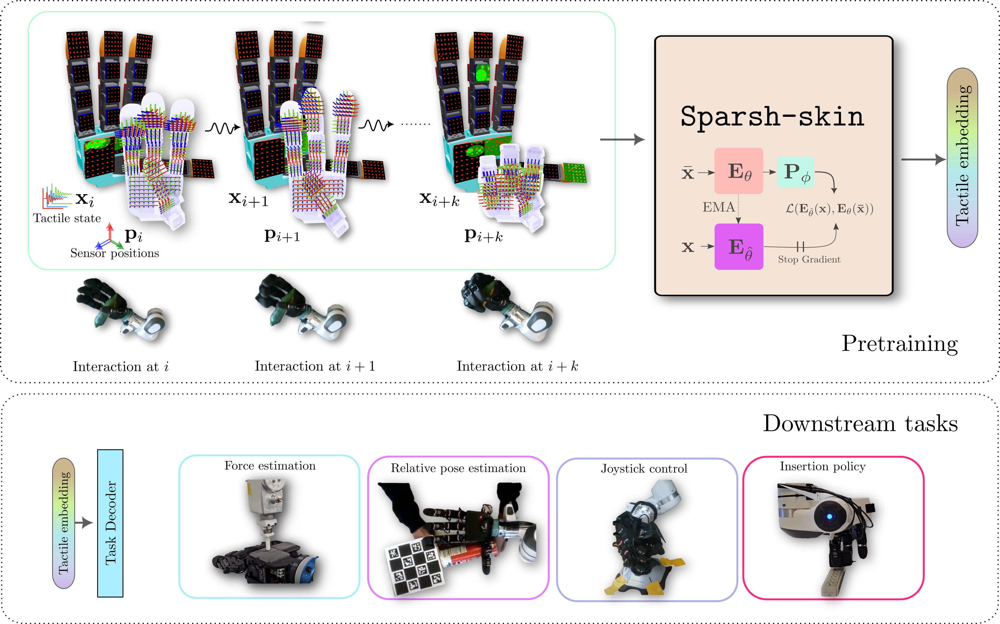

📃Sparsh-Skin 리뷰

- 자성 스킨 센서가 장착된 로봇 손을 위한 자기 지도 학습 기반의 고성능 촉각 표현 모델인 Sparsh-skin을 제안합니다.
- Sparsh-skin은 라벨링이 되어 있지 않은 다양한 종류의 로봇 손-객체 상호작용 데이터를 사용하여 자기 증류(self-distillation) 방식으로 사전 학습되어 일반화된 촉각 특성을 학습합니다.
- 힘 추정, 조이스틱 상태 추정, 자세 추정, 플러그 삽입 등의 다운스트림 작업에서, Sparsh-skin 표현은 기존 연구 및 End-to-end 학습 방식 대비 성능과 샘플 효율성을 크게 향상시킴을 입증했습니다.
비슷한 저자들 리스트로 이전에 작성한 논문인 Sparsh: Self-supervised touch representations for vision-based tactile sensing 논문과 혼동하지 않도록 주의합니다. 해당 논문에 대한 포스팅은 📃Sparsh 리뷰에 있습니다.
Brief Review
본 논문은 자기식 피부 센서로 덮인 민첩한 로봇 손을 위한 자기 지도 방식의 인지(Self-supervised perception) 접근법인 Sparsh-skin을 제안합니다. 자기식 촉각 피부 센서는 손가락 끝에 국한되고 대역폭에 제약이 있는 비전 기반 촉각 센서와 달리, 빠른 응답 속도와 유연한 폼 팩터로 손 전체를 커버할 수 있다는 장점이 있습니다. 손 전체의 촉각 인지는 로봇의 민첩성에 매우 중요하지만, 범용 모델의 부재와 자기 플럭스(magnetic flux) 신호의 해석 및 캘리브레이션의 어려움으로 인해 이러한 센서의 활용이 제한적이었습니다.
Sparsh-skin은 로봇 손의 운동학적 정보와 촉각 센싱 이력을 입력받아, 모든 downstream task에 사용될 수 있는 잠재적 촉각 임베딩(latent tactile embedding)을 출력하는 인코더입니다. 이 인코더는 Allegro 손에 Xela uSkin 센서를 장착하여 수집된 약 4시간 분량의 다양한 비레이블 손-물체 상호 작용 데이터를 활용하여 Self-distillation 방식을 통해 자기 지도 학습(SSL)으로 사전 학습됩니다. 본 연구는 다양한 벤치마크 실험(힘 추정, 조이스틱 상태 추정, 자세 추정, 플러그 삽입 정책 학습 등)을 통해 사전 학습된 Sparsh-skin 표현이 다운스트림 작업을 학습하는 데 있어 샘플 효율적(sample efficient)일 뿐만 아니라, 기존 연구 대비 41% 이상, 종단 간 학습(end-to-end learning) 대비 56% 이상 작업 성능을 향상시킴을 보입니다.
핵심 방법론
Sparsh-skin은 Transformer 아키텍처를 기반으로 하는 학생(student) 네트워크 E_\theta와 교사(teacher) 네트워크 E_{\hat{\theta}}로 구성된 자기 증류 프레임워크를 사용합니다. 입력은 100ms 길이의 촉각 측정값 (\mathbf{x}_{1:10} \in \mathbb{R}^{10 \times 368 \times 3})과 센서 위치 정보 (\mathbf{p}_{1:10} \in \mathbb{R}^{10 \times 368 \times 3})의 이력입니다. 각 센서(총 368개)의 데이터는 선형 투영 f_{\text{linear}}을 통해 표현 차원 d로 토큰화됩니다: \mathbf{z}_i = f_{\text{linear}}(\mathbf{x}_{1:10} | \mathbf{p}_{1:10}) \in \mathbb{R}^{368 \times d} 또한, 손바닥, 손가락 마디, 손가락 끝 등 Xela 센서 패드의 유형에 따라 학습 가능한 토큰(learnable token)이 각 센서에 추가됩니다. 위치 임베딩(positional embedding) 대신 3D 센서 위치 정보를 활용합니다.
데이터 손상(data corruption) 기법으로는 이미지 도메인의 크롭/리사이즈가 자기 플럭스 신호의 의미론적 변화를 유발할 수 있으므로, 토큰화 이후에 블록 마스킹(block masking)을 적용합니다. 이는 인접한 센서 아일랜드(sensor island)를 포함한 연속적인 센서 블록을 입력에서 제거하는 크로스-택셀(cross-taxel) 방식입니다. 학생 네트워크는 손상된 입력 \bar{\mathbf{z}}_i를 받고, 교사 네트워크는 덜 손상된 입력 \mathbf{z}^*_i를 받습니다 (학생은 무작위로 10%~40%의 데이터를 유지한 k개 마스크를, 교사는 40%~100%의 데이터를 유지한 1-2개 마스크를 받습니다).
예측 작업(prediction task)은 마스크드 오토 재구성(masked auto-reconstruction)보다 센서 노이즈에 강건한 분류(classification) 방식을 사용합니다. 변환된 센서 토큰은 분류 헤드 f_{\text{class}}를 통해 프로토타입 로짓(prototype logit)으로 변환됩니다:
- 학생은 \bar{\mathbf{p}}_i = f_{\text{class}}(E_\theta(\bar{\mathbf{z}}_i)),
- 교사는 \mathbf{p}^*_i = f_{\text{class}}(E_{\hat{\theta}}(\mathbf{z}^*_i)).
학생 및 교사 로짓 예측 간의 패치 레벨 교차 엔트로피(patch level cross entropy) 목표를 사용하여 센서 표현에서 국소-전역(local-to-global) 대응 학습을 강화합니다. 교사 네트워크의 가중치 \hat{\theta}는 역전파(back-propagation)가 아닌 학생 네트워크 가중치 \theta의 지수 이동 평균(EMA)으로만 업데이트됩니다: \hat{\theta} \triangleq \text{EMA}(\theta)
평가 결과
사전 학습 진행 상황 모니터링을 위해 온라인 프로브(online probe)를 사용합니다. 재구성(reconstruction) 및 물체 식별 능력(분류 정확도)을 평가하며, Sparsh-skin은 MAE 기반 모델보다 우수한 재구성 및 물체 분류 성능(약 95% 정확도)을 보였습니다.
평가 프로토콜에서 다운스트림 작업은 즉각적 예측 작업과 시간적 추론 작업으로 나뉩니다.
- 즉각적 작업(힘 추정)에는 어텐티브 풀링(attentive pooling)과 작은 2층 MLP가 사용됩니다.
- 시간적 작업(조이스틱, 자세 추정)에는 어텐티브 풀링 후 1층 Transformer 블록이 사용됩니다.
모델 비교에는 BYOL* (본 논문에서 재현한 BYOL 변형), End-to-end, Sparsh-skin (frozen), Sparsh-skin (finetuned), Sparsh-skin (MAE)이 포함됩니다. 성능은 RMSE (힘, 조이스틱, 자세), 자세 정확도 (자세), 성공률 (플러그 삽입)로 측정되며, 샘플 효율성을 평가하기 위해 레이블된 데이터의 비율을 변화시켰습니다.
주요 실험 결과는 다음과 같습니다:
- 힘 추정: End-to-end 모델은 특히 저데이터 환경에서 성능이 매우 떨어지지만, Sparsh-skin (frozen) 및 Sparsh-skin (finetuned)은 적은 데이터로도 일관된 성능을 유지했습니다. Sparsh-skin (MAE)는 자기 플럭스 신호의 노이즈 특성으로 인해 성능이 좋지 않았습니다.
- 조이스틱 상태 추정: Sparsh-skin은 전체 데이터를 사용했을 때 기존 HiSS* 모델과 유사한 성능을 보였으며, 3.3%의 데이터만 사용했을 때도 높은 샘플 효율성을 보이며 경쟁력 있는 성능을 달성했습니다.
- 자세 추정: 사전 학습된 Sparsh-skin 표현을 사용한 모든 모델이 End-to-end 모델보다 낮은 RMSE와 높은 자세 정확도를 보였습니다. Sparsh-skin (finetuned)은 End-to-end 대비 이동에서 약 10%, 회전에서 약 20% 향상된 성능을 보였습니다. 손 전체 센싱(palm sensing)이 자세 추정에 중요함이 확인되었습니다.
- 정책 학습 (플러그 삽입): 비전과 Sparsh-skin 촉각 표현을 함께 사용한 정책은 비전 단독 정책 (20% SR) 및 종단 간 시각-촉각 정책 (40% SR) 대비 우수한 성능 (Sparsh-skin (frozen) 75% SR)을 보였습니다. 촉각 정보가 삽입 성공률에 크게 기여함을 확인했습니다.
본 연구는 자기식 피부 센서를 위한 고성능 촉각 표현 모델인 Sparsh-skin을 제안합니다. 광범위한 비레이블 데이터에 대한 자기 지도 학습을 통해 획득된 Sparsh-skin 표현은 다양한 촉각 중심 작업에서 우수한 성능과 샘플 효율성을 입증했습니다. 이는 손 전체 촉각 표현을 위한 파운데이션 모델(foundation model)로 나아가는 한 단계로 간주됩니다.
논문의 한계점으로는, 데이터 손상 전략이 주로 공간적이며 시간적 상관 관계 학습을 명시적으로 다루지 않는 점, 현재 자세 추정 작업은 고정된 손과 2D 자세에 제한적이라는 점, 그리고 시각-촉각 정책의 일반화 가능성에 대한 추가 연구가 필요하다는 점 등이 제시되었습니다.
Detail Review
Self-supervised perception for tactile skin covered dexterous hands – 논문 리뷰
배경 및 연구 동기
로봇 손의 촉각 감각은 물체를 조작하고 조작기(dexterous manipulator)의 성능을 높이는 데 필수적인 역할을 합니다. 특히 손가락 끝에 국한된 기존 시각 기반 촉각 센서(예: GelSight 계열, DIGIT 등)는 고해상도 정보를 제공하지만, 손 전체를 감싸는 형태로 적용되기 어렵고 대역폭 제약으로 빠른 응답에도 한계가 있습니다. 이에 비해 자기 기반 촉각 피부 센서(magnetic tactile skin)는 얇고 유연하게 손가락 마디와 손바닥 전체에 부착할 수 있으며, 빠른 응답 속도를 갖춘다는 장점이 있습니다. 그러나 이러한 자기 촉각 센서들은 센서 출력(자계 플럭스)을 해석하고 보정(calibration)하는 데 어려움이 있고, 각기 다른 지자기 환경에서의 기준점 드리프트 등 문제로 표준화된 일반 모델이 부재하여 널리 활용되지 못했습니다. 다시 말해, 기존에는 특정 작업이나 센서에 특화된 규칙 기반 또는 개별 학습 모델에 의존하는 경우가 많았고, 손 전체를 포괄하는 일관된 촉각 표현 방식이 부족했습니다.
이러한 맥락에서, Akash Sharma 등 연구진은 “Self-supervised perception for tactile skin covered dexterous hands” 논문에서 손가락, 마디, 손바닥을 모두 덮는 다수의 촉각 피부 센서로부터 얻는 신호를 효율적으로 통합하여 표현하는 방법을 제안했습니다. 핵심 아이디어는 자기 지도 학습(self-supervised learning)을 활용해 대량의 비라벨(unlabeled) 상호작용 데이터로부터 일반적인 촉각 표현을 학습하는 것입니다. 이를 통해 로봇 손 전체의 촉각 정보를 하나의 잠재 벡터 표현(latent embedding)으로 압축하여, 이후 어떤 다운스트림 작업(task)에도 활용할 수 있도록 합니다. 이러한 접근은 딥러닝 기반 시각 인식 분야에서 자기 지도 표현 학습이 큰 성공을 거둔 것을 촉각 영역에 적용한 것으로, 복잡한 라벨링 없이도 모델이 촉각의 풍부한 특징들을 학습하도록 유도합니다.
결과적으로, 이 연구의 동기는 손 전체에 분포된 촉각 센서로부터 얻는 방대한 정보를 효율적으로 해석하고 범용적으로 활용하기 위한 표현 학습 방법을 개발하는 데 있습니다. 특히 기존 연구인 “Sparsh: Self-supervised touch representations for vision-based tactile sensing”에서 손끝 카메라 기반 촉각 센싱에 대한 자기 지도 학습 기법이 제시되었는데, 본 논문은 그 철학을 이어받아 촉각 피부 센서라는 새로운 하드웨어 플랫폼에 적용하고 확장한 연구라고 할 수 있습니다. 아래에서는 본 논문의 주요 기여와 방법론, 실험 결과를 상세히 살펴본 후, 앞선 Sparsh 연구와의 기술적 연관성과 차이점을 비교해보겠습니다.
주요 기여 및 접근 방법
Sparsh-skin이라 명명된 본 논문의 접근법은, 알레그로(Allegro) 로봇 손에 장착된 Xela uSkin 자기 촉각 센서들로부터 손 전체의 촉각 상태를 표현하는 사전학습 인코더(pre-trained encoder)를 제시한 것입니다. 구체적으로, 손가락 끝, 마디, 손바닥 등 여러 부위에 분포된 다수의 uSkin 센서들로부터 얻는 신호를 한데 모아 풀-핸드(full-hand) 촉각 임베딩을 생성합니다. 이때 한 시점의 센서 값뿐 아니라 최근의 짧은 이력까지 입력으로 사용하여, 시간적 맥락(예: 미끄러짐 발생 추이 등)을 반영한 표현을 학습합니다. 입력에는 각 센서의 3차원 위치 정보까지 포함하여, 모델이 접촉 신호의 공간적 분포를 이해할 수 있도록 하였습니다. 이렇게 학습된 Sparsh-skin 인코더는 다양한 다운스트림 작업에서 특정 작업에 특화된 추가 학습 없이도 바로 사용되거나, 최소한의 미세조정(fine-tuning)만으로 우수한 성능을 낼 수 있는 범용 표현을 제공합니다.
이 논문의 주요 기여를 정리하면 다음과 같습니다:
손 전체를 덮는 자기 촉각 피부 센서를 위한 최초의 범용 표현 학습 모델 제시: 손바닥까지 포함한 다지점 촉각을 통합적으로 다루기 위해, 자체 개발한 Sparsh-skin 인코더 구조를 통해 풀-핸드 촉각 임베딩을 구현했습니다. 이는 기존에 손끝 위주의 촉각센서 연구를 손 전체로 확장한 것으로, 로봇 손의 섬세한 조작(dexterity) 능력을 향상시킬 수 있는 기반을 마련합니다.
대규모 비라벨 데이터셋 수집 및 자기 지도 학습 적용: 연구진은 VR 원격조작을 통해 14가지 일상 물체(장난감, 도구 등)를 대상으로 쥐기, 밀기, 비비기, 회전, 누르기, 문지르기, 관절 운동 등 다양한 원자적 조작 행동을 수행하여 약 4시간 분량의 촉각 데이터를 수집했습니다. 이러한 다양한 접촉 경험을 활용해 라벨이 없는 상태에서 자기 지도 학습(self-supervised learning)으로 인코더를 사전학습시켰습니다. 특히 자기-증류(self-distillation) 기법을 도입하여, 교사-학생 네트워크 간 훈련으로 모델이 손상된 입력 데이터로부터도 일관된 표현을 추출하도록 유도했습니다.
여러 벤치마크 과제를 통해 범용성 및 성능 입증: 사전학습된 Sparsh-skin 표현의 효용을 검증하기 위해, 상태 추정(state estimation)부터 정책 학습(policy learning)에 이르는 여러 다운스트림 과제에 적용해 보았습니다. 그 결과, 기존 방법 대비 41% 이상의 성능 향상, 엔드투엔드 학습 대비 56% 이상의 향상을 달성하였고, 데이터 효율(sample efficiency)도 크게 높아져 적은 양의 학습데이터로도 높은 성능을 발휘함을 보였습니다. 이는 Sparsh-skin 임베딩이 다양한 작업에 걸쳐 일반적이고 풍부한 촉각 특성을 함유하고 있음을 의미합니다.
이러한 기여를 통해, 본 연구는 범용 로봇 촉각 지각을 향한 중요한 진전을 이루었습니다. 손 전체에 분포된 센서들의 고차원 신호를 저차원 벡터로 함축함으로써, 복잡한 촉각 정보를 효율적으로 처리하고, 로봇의 학습 및 제어에 활용할 수 있게 하였습니다.
💡 모델 및 자기 지도 학습 방법론
본 논문에서 제안하는 Sparsh-skin 인코더의 학습 방법은 자기 지도 학습(SSL)의 일종인 자기-증류(self-distillation)를 활용하는 것이 핵심입니다. 이를 구현하기 위해 교사(teacher) 네트워크와 학생(student) 네트워크의 구조를 사용하며, 두 네트워크는 동일한 인코더 아키텍처를 공유하지만 가중치 업데이트 방식에 차이를 둡니다. 교사 네트워크는 학생 네트워크의 과거 가중치를 이용하거나 지수 이동 평균(EMA)으로 업데이트되어 보다 안정된 출력을 제공하고, 학생 네트워크는 실제 학습을 통해 가중치가 갱신됩니다.
훈련 시간마다 동일한 촉각 데이터에 대해 교사와 학생에 서로 다른 입력을 제공하는데, 교사에게는 완전한 원본 데이터 x를 입력하고, 학생에게는 여기에 잡음 또는 결손을 가한 변형 데이터 \tilde{x}를 입력합니다. 구체적으로, 학생 입력 \tilde{x}는 일부 촉각 신호를 마스킹(masking)하거나 노이즈를 추가하는 등의 오염된(corrupted) 데이터로 만들어, 학생 인코더가 불완전한 정보로부터도 의미 있는 표현을 추출하도록 도전합니다. 한편 교사 인코더는 온전한 데이터로부터 기준이 될 표현 E_{\hat{\theta}}(x)을 생성해 놓습니다. 학습 목표는 학생 인코더의 출력 표현 E_{\theta}(\tilde{x})가 교사의 출력 E_{\hat{\theta}}(x)와 가까워지도록 하는 것입니다. 이를 위해 두 출력 임베딩 간 거리를 측정하는 손실 함수(예: 코사인 거리 혹은 L2 노름)를 최소화하며 학생 네트워크를 학습시킵니다. 이렇게 하면 학생 네트워크는 부분적인 정보만으로도 전체 정보를 예측하도록 훈련되고, 결과적으로 강인하고 풍부한 표현을 얻게 됩니다.
그림 1: Sparsh-skin 자기 지도 학습 개요. 알레그로 로봇 손에 자기 촉각 피부 센서를 부착하여 전체 손가락과 손바닥에서 촉각 신호를 수집한다 (왼쪽). 교사 네트워크는 완전한 센서 입력 x를 받아 잠재 표현 E_{\hat{\theta}}(x)을 생성하고, 학생 네트워크는 일부 센서 신호가 제거되거나 노이즈가 추가된 오염된 입력 \tilde{x}에 대해 표현 E_{\theta}(\tilde{x})을 출력한다 (오른쪽). 학생 네트워크는 자신의 출력을 교사 출력에 가깝게 예측하도록 학습됨으로써, 불완전한 입력에서도 의미 있는 전체 촉각 상태 표현을 얻도록 훈련된다. 아래 작은 예시 그림들은 이렇게 학습된 Sparsh-skin 표현을 활용하여 수행할 수 있는 다양한 다운스트림 과제들을 보여준다. (이미지 제공: 논문 저자)
Sparsh-skin 인코더의 입력은 로봇 손의 각 촉각 센서로부터 최근 짧은 시간 동안 수집된 신호 시퀀스입니다. 예를 들어 약 0.1초 이내의 짧은 시간 창(window) 동안 센서들이 출력한 정규화된 3축 힘 신호들을 모아 하나의 입력으로 구성합니다. 이는 순간적인 값보다 약간의 시간적 변화까지 고려함으로써, 정적 압력 분포뿐 아니라 마찰력 변화, 미끄러짐 등 동적 특징도 포착하기 위함입니다. 이전의 Sparsh 연구에서도 수십 밀리초 길이의 짧은 프레임 시퀀스(예: 80ms)를 토큰화하여 사용하면 일반화와 표현력 향상에 중요하다는 결과가 있었는데, Sparsh-skin 역시 이러한 Temporal Tokenization 개념을 자기 촉각 신호에 적용한 것입니다. 또한 Sparsh-skin의 입력에는 각 센서의 공간적 위치 정보(손 구조 내 3D 좌표)를 포함시켜, 인코더가 입력 신호의 공간적 맥락까지 고려하도록 했습니다. 예를 들어 같은 크기의 힘이라도 손바닥 중앙에서 감지된 것과 손가락 끝에서 감지된 것은 로봇이 취해야 할 대응이 다를 수 있으므로, 모델이 센서의 위치를 알 수 있게 한 것입니다.
인코더 모델 구조 자체에 대해서는 논문에서 구체적인 구현 디테일을 제공하고 있는데, 기본적으로 위에서 설명한 교사/학생 프레임워크를 따르는 신경망 인코더입니다. 각 센서로부터 오는 시간 이력 신호는 개별적으로 임베딩된 후 손 전체 수준에서 통합됩니다. 이를 구현하는 한 가지 방식으로 추측되는 것은, 예를 들어 각 센서 정보를 하나의 토큰으로 보고 트랜스포머(Transformer) 인코더 구조를 사용하여 상호작용을 학습시키는 것입니다. 실제로 모델은 센서-레벨의 표현(sensor-level representation)을 학습한다고 언급하고 있으며, 이는 각 센서 신호를 저차원 특징으로 임베딩한 뒤, 이러한 임베딩들을 통합하여 손 전체의 표현을 만든다는 의미로 해석됩니다. 트랜스포머나 그래프 신경망(GNN) 같은 아키텍처를 활용하면 자연스럽게 각 센서의 위치나 인접한 센서 간 관계를 학습할 수 있을 것으로 보입니다. 다만 논문은 구체적인 아키텍처보다는 학습 전략(self-distillation)에 중점을 두어 서술하고 있으므로, 여기서는 핵심 아이디어 수준에서 이해하면 충분합니다.
정리하면, Sparsh-skin의 방법론은 (1) 손 전체에서 얻은 짧은 시간 구간의 다중 촉각 신호와 센서 위치 정보를 인코더의 입력으로 사용하고, (2) 자기-증류 방식의 무라벨 사전학습을 통해 학생 네트워크가 부분 관찰에서도 전체 촉각 상태를 함축하는 표현을 내도록 훈련하며, (3) 이렇게 학습된 인코더를 고정 또는 미세조정하여 다양한 후속 작업에 활용하는 것입니다.
실험 설정 및 결과
연구진은 제안한 Sparsh-skin 인코더의 효과를 평가하기 위해 다양한 벤치마크 실험을 수행했습니다. 크게 나누어 보면 (a) 물리적 양상 추정 (예: 힘, 물체 위치 등)과 (b) 조작 정책 학습 두 범주로 실험을 구성했습니다. 사용된 로봇 플랫폼은 Shadow Allegro Hand로, 여기에 16개의 Xela uSkin 센서 패치를 장착하여 손가락 4개 전체와 손바닥 일부를 커버하였습니다. 각 센서 패치는 3축 힘을 감지하므로, 손 전체에서 3×16=48차원의 촉각 데이터가 시각적으로는 일종의 힘 분포 지도처럼 출력됩니다. 앞서 언급한 대로 연구진은 VR 기기를 이용해 원격 조작으로 데이터 수집을 진행했는데, 총 4시간 분량의 촉각 데이터 동안 14개의 서로 다른 일상 물체 및 장난감을 가지고 여러 가지 접촉 동작을 수행하였습니다. 예를 들어, 부드러운 공을 쥐었다 놓기, 블록을 손바닥에서 미끄러뜨리기, 병뚜껑을 비틀어 열기, 키보드를 누르기 등의 원초적 동작들이 포함되었습니다. 이러한 데이터는 완전히 라벨 없는 상태로 수집되었으며, Sparsh-skin 인코더의 사전학습에 사용되었습니다. 사전학습 후, 연구진은 아래와 같은 다운스트림 과제들에서 Sparsh-skin의 표현을 활용하여 성능을 측정하였습니다:
힘(접촉 신호) 재구성 및 추정: 첫 번째로, 촉각 신호 자체를 복원하는 과제를 통해 인코더가 실제 힘 정보를 얼마나 보존하는지 확인했습니다. Sparsh-skin 인코더로부터 나온 잠재 벡터를 다시 원래 각 센서들의 신호로 복원하도록 오토인코더 데코더를 훈련하여, 복원된 촉각 지도를 시각화했습니다. 그 결과, 녹색 원으로 표시된 센서별 누르는 힘의 크기(원 크기에 비례)와 빨간 화살표로 표시된 전단(마찰) 방향(원래 센서 위치에서 어긋난 정도와 방향으로 표현)이 실제 접촉과 잘 부합함을 보였습니다. 이는 Sparsh-skin의 잠재 표현이 센서별 접촉력 (정규분력 + 전단력) 정보를 효과적으로 압축하고 있음을 시사합니다. 나아가, 별도의 절대 힘 보정 모델을 약간의 지도학습으로 학습하면, Sparsh-skin 표현으로부터 실제 뉴턴 단위의 힘 추정도 가능함을 보여주었습니다. 이러한 힘 추정 능력은 추후 로봇이 접촉력을 조절하거나, 미끄러짐을 예방하기 위해 힘 변화를 감지하는 등에 활용될 수 있습니다.
손에 쥔 물체의 자세(pose) 추정: 두 번째로, 로봇 손이 잡고 있는 물체의 상대적인 자세를 촉각 정보만으로 추정하는 과제를 실험했습니다. 예컨대 손바닥 위에 놓인 원기둥 물체의 회전 각도나 위치 이동을 Sparsh-skin 표현으로부터 예측하는 것입니다. 이를 위해 연구진은 회귀-분류 혼합 방식(regression-by-classification)의 얕은 모델을 사용하여, Sparsh-skin 표현을 입력 받아 물체의 SE(3) 자세를 추론했습니다 (Sparsh 논문의 경우 2D 평면 상의 SE(2) 변환을 추정하는 실험이 있었고, 본 연구에서도 유사한 접근을 3차원으로 확장했을 것으로 보입니다). 그 결과 Sparsh-skin으로 학습한 표현이 물체의 회전 및 이동 정보를 상당 부분 내포하고 있음을 확인할 수 있었습니다. 이는 촉각만으로도 물체의 상대적인 위치 변화를 감지할 수 있음을 보여주며, 시각 정보 없이도 손아귀 내의 물체 추적이 가능할 잠재력을 시사합니다.
플러그 삽입(정밀 조작) 정책 학습: 세 번째로, Sparsh-skin 표현이 실제 다지 손 조작 과제에서 정책(policy) 학습을 얼마나 도와주는지 평가했습니다. 실험으로 선택된 과제는 플러그 삽입으로, 로봇 손이 미리 쥐고 있는 플러그를 앞에 놓인 멀티탭 콘센트의 첫 번째 소켓에 정확히 꽂는 작업입니다. 이 과제는 손가락들로 플러그를 단단히 쥔 채, 손목과 손가락의 적절한 조합 움직임으로 플러그 핀을 소켓 홀에 맞춰 넣어야 하므로, 난이도가 높은 정밀 조작에 속합니다. 연구진은 이 작업에 대해 인간 원격조작 데모 여러 회를 수집한 후, 이를 이용해 확산 정책(Diffusion Policy) 알고리즘으로 모델 예측 제어 정책을 학습시켰습니다. 학습된 정책은 멀티 모달 입력을 사용하는데, 3대의 외부 카메라 영상과 손목 카메라 영상이 시각 입력으로 주어지고 여기에 Sparsh-skin 촉각 표현이 결합된 형태였습니다. 비교군으로는 촉각 정보를 사용하지 않고 오직 비전(vision) 입력만 사용하는 경우와, 촉각을 사용하되 end-to-end로 학습하는 경우 등을 설정했습니다. 평가 결과, Sparsh-skin 사전학습 표현을 사용한 경우가 가장 높은 성공률을 보였으며, 동일한 촉각 정보를 end-to-end로 학습한 정책이나 촉각을 배제한 정책에 비해 안정적이고 데이터 효율적으로 학습됨을 확인했습니다. 예를 들어, 마지막 단계에서 Sparsh-skin 표현을 쓴 정책은 시각 입력만으로 학습한 정책보다 성공률이 유의미하게 높고(촉각 미활용 대비), end-to-end 대비 학습 안정성 및 성공률 모두 향상되었음을 보고하였습니다. 이는 촉각 표현이 시각으로 부족한 미세 정렬 정보를 보완하고, 학습 공간을 줄여주어 정책 학습을 용이하게 만들었기 때문으로 해석됩니다.
以上 세 가지 대표 실험을 통해, Sparsh-skin으로 사전학습된 촉각 임베딩이 여러 형태의 다운스트림 작업에서 유용함을 입증했습니다. 정량적인 성능을 요약하면, Sparsh-skin을 사용한 경우 기존의 최선의 방법 대비 평균 41% 이상 성능 향상이 있었고, 특정 작업에서는 최대 56% 향상이 관찰되었습니다. 예컨대 물체 자세 추정 정확도가 크게 높아졌으며, 플러그 삽입 성공률도 촉각 미사용 대비 상당히 향상되었습니다. 또한 학습 곡선을 비교하면, 사전학습된 표현을 사용한 경우 적은 양의 데이터로도 목표 성능에 도달함을 보여 표본 효율성(sample efficiency) 역시 개선되었음을 알 수 있습니다. 이는 Sparsh-skin 임베딩이 다양한 촉각 상황에 대해 일반화된 특징 표현을 제공하기 때문에 가능한 결과로, 각각의 과제마다 초반부터 유용한 특성을 추출하여 학습을 빠르게 진행할 수 있었던 것으로 볼 수 있습니다.
한계 및 향후 과제
본 연구는 손 전체 촉각 센서를 활용한 자기 지도 표현 학습의 가능성을 보여주었지만, 여전히 남아있는 한계점과 향후 발전시킬 방향이 존재합니다:
절대적 힘/물리량에 대한 정밀 보정: Sparsh-skin 표현은 다양한 접촉 패턴의 상대적 차이는 잘 학습하지만, 실제 뉴턴 단위의 절대 힘 추정이나 절대적인 마찰 계수 추정 등에는 추가 보정이 필요할 수 있습니다. 자기 센서 출력은 환경 자계나 개별 센서 편차 등으로 drift가 있을 수 있어, 완전히 보정 없는 상태로는 절대값 예측에 한계가 있습니다. 향후에는 사전학습된 표현에 소량의 라벨된 데이터(예: 힘 센서 계측값)로 미세 보정을 가하여, 절대 물리량까지 정밀하게 추정하는 방향으로 발전시킬 수 있습니다.
다양한 센서 및 모달리티와의 통합: 본 연구는 Xela사의 uSkin이라는 특정 자기 촉각 센서 하드웨어에 초점을 맞추고 있습니다. 다른 종류의 촉각 센서(예: 광학식 젤 촉각센서, 압전 센서 등)나 온도/진동과 같은 다른 접촉 감각까지 통합한 표현으로 확장하는 것도 과제입니다. 사실 Sparsh 계열의 다른 연구로 Sparsh-X라는 다중모달(multisensory) 촉각 표현을 개발한 예가 있는데, 여기서는 이미지, 힘, 진동, 음향 등의 신호를 함께 학습시켜 성능을 높였습니다. 향후 Sparsh-skin도 비전 카메라 정보나 소리 센서 등을 결합한 멀티모달 학습으로 발전시킨다면, 더욱 풍부한 촉각 지각 능력을 얻을 수 있을 것입니다.
일반화 및 전이 학습: Sparsh-skin 인코더는 한 가지 로봇 손과 센서 세팅에 대해 학습되었습니다. 이를 다른 로봇 손(예: 형태가 다른 로봇 그리퍼)이나 다른 센서 배열에도 적용하려면 추가 연구가 필요합니다. 손 구조나 센서 분포가 바뀌면 센서 위치 임베딩 등 입력 표현을 조정해야 하며, 경우에 따라 전이 학습(transfer learning)이 필요할 수 있습니다. 미래에는 여러 형태의 손과 센서 데이터를 통합하여 학습하거나, 학습된 모델을 새로운 하드웨어에 도메인 적응시키는 연구도 이루어질 것으로 기대됩니다.
실시간 제어와의 접목: 현재 Sparsh-skin 표현은 주로 오프라인 데이터를 활용한 학습 및 평가로 그쳐 있습니다. 향후에는 이 표현을 로봇의 실시간 제어 루프에 넣어, 피드백 제어나 모델 예측 제어(MPC)에서 바로 활용하는 방안도 고려될 수 있습니다. 예를 들어 손가락 미끄러짐 감지 후 즉각 그립 조정을 한다든가, 힘 제어 루프에 Sparsh-skin 피처를 반영하는 등의 응용이 가능할 것입니다. 이를 위해서는 인코더의 추론 속도 최적화와 실시간 신뢰도 평가 등이 뒷받침되어야 합니다.
요약하면, Sparsh-skin 연구는 촉각 표현 학습 분야에 새로운 장을 열었으나, 절대적 물리량 추정, 다양한 센서 통합, 새로운 형태로의 일반화, 실시간 시스템 적용 등 앞으로 탐구해야 할 흥미로운 연구 과제가 남아 있습니다. 이러한 방향으로 지속적인 연구가 이뤄진다면, 장차 로봇이 사람 수준으로 풍부한 촉각지능을 갖추는 데 크게 기여할 것으로 보입니다.
💥 Sparsh (시각 기반 촉각 표현 학습) 연구와의 연관성
앞서 언급하였듯이, 본 논문의 Sparsh-skin은 2024년 CoRL에 발표된 Sparsh 연구의 연장선 상에 있습니다. Sparsh는 “Self-supervised touch representations for vision-based tactile sensing”라는 제목 그대로, 시각 정보를 활용하는 촉각 센서(예: GelSight, DIGIT와 같은 카메라 기반 촉각센서)를 위한 자기 지도 표현 학습 기법을 제시한 바 있습니다. Sparsh 연구의 배경에는, 최근 등장한 고해상도 촉각 카메라 센서들이 로봇 조작에 큰 도움이 되고 있지만, 각기 다른 센서마다 라이팅 조명, 젤 패턴, 카메라 특성 등이 달라 센서마다 별도의 모델을 만들어야 하는 비효율이 있다는 문제의식이 있었습니다. 또한 미끄러짐(slip) 감지나 접촉력 추정 등의 과제를 위한 레이블된 데이터 수집이 어려움도 존재했습니다. 이를 해결하고자 Sparsh에서는 다양한 촉각 카메라로부터 얻은 약 46만 장 이상의 촉각 이미지를 모아 합쳐서 통합된 자기 지도 학습을 수행하였습니다.
구체적으로, Sparsh 연구진은 MAE(Masked Autoencoder), DINO(자기 증류), JEPA(Joint Embedding Predictive Architecture) 등 여러 자기 지도 학습 기법을 실험적으로 비교하여, 어떤 접근이 촉각 이미지 표현에 가장 효과적인지 분석했습니다. 그 결과 픽셀 공간에서 복원하는 MAE보다는, 잠재 표현 공간에서 예측하도록 학습하는 DINO나 I-JEPA와 같은 기법이 더 우수하다는 결론을 얻었고, 최종적으로 Sparsh-DINO와 Sparsh-IJEPA 모델이 가장 경쟁력 있는 성능을 보였습니다. 이들 모델은 사전학습을 거치지 않은 end-to-end 학습 대비 TacBench로 명명된 촉각 벤치마크에서 평균 95.1%라는 압도적인 성능 향상을 보였는데, 이는 사전학습의 효과가 매우 크다는 것을 단적으로 보여줍니다. TacBench에는 6가지의 다양한 촉각 과제(예: 접촉력 맵 복원, 미끄럼 여부 분류, 물체 식별, 조작 계획 등)가 포함되는데, Sparsh 사전학습 모델은 이들 여러 과제와 서로 다른 센서들에 대해 모두 일관되게 뛰어난 성능을 발휘하였습니다. 요컨대 Sparsh 연구를 통해, 시각 기반 촉각센서 분야에서도 거대한 데이터로 범용 촉각 표현을 학습하면 개별 문제에 일일이 학습하는 것보다 훨씬 효과적임이 입증된 것입니다.
이러한 Sparsh의 철학과 성과는 Sparsh-skin으로 고스란히 이어졌습니다. 두 연구의 기술적 연속성과 차별점을 정리하면 다음과 같습니다:
학습 철학의 연속성: 두 연구 모두 “촉각 데이터의 범용 표현(foundation representation)”을 목표로 합니다. 라벨이 부족한 촉각 영역에서 자기 지도 학습을 도입하여 사전학습된 인코더를 만들고, 이를 다양한 작업에 적용하는 큰 흐름이 Sparsh에서 Sparsh-skin으로 이어집니다. 즉, 시각 촉각이미지에서 자기 촉각피부 신호로 입력 modality만 달라졌을 뿐, 비지도 사전학습 → 다운스트림 전이의 구조는 동일한 철학입니다.
센서 형태의 차이: Sparsh는 카메라 기반 촉각 센서(vision-based tactile) 즉, 이미지 형태의 촉각 데이터를 다루었습니다. 반면 Sparsh-skin은 자기장 기반 촉각 피부 센서로, 데이터가 다중 지점의 아날로그 신호 시퀀스 형태입니다. Sparsh에서는 이미지 패치를 마스킹하거나 하는 식으로 이미지 처리 기법이 활용되었고, Conv-NeXt나 ViT와 같은 비전 신경망 백본을 사용했습니다. Sparsh-skin에서는 시계열 센서 신호이므로, 시간 처리 및 센서 위치 임베딩 등 시계열+구조적 데이터 처리 기법이 필요합니다. 따라서 모델 아키텍처 관점에서 Sparsh는 CNN/Transformer 비전 백본이고, Sparsh-skin은 아마도 시계열 임베딩 + Transformer (혹은 GNN) 구조로 구현되는 등 차이가 있습니다. 또한 Sparsh는 한 번에 하나의 센서 이미지(손가락 한 개의 촉각 이미지)에 대해 동작하지만, Sparsh-skin은 손 전체의 여러 센서를 동시에 다룹니다. 즉 Sparsh는 여러 센서 종류에 대해 각각 적용 가능한 모델이었다면, Sparsh-skin은 여러 센서가 이루는 하나의 시스템을 한꺼번에 모델링한다는 차이가 있습니다.
학습 데이터와 범위: Sparsh는 여러 연구팀이 공개한 여러 촉각 이미지 데이터셋을 통합 활용하여 총 66만장 가량의 이미지를 모았습니다. 여기에는 GelSight 센서로 누른 물체 데이터, DIGIT 센서로 문지른 데이터 등 다양한 상황이 포함되어, 한 가지 손가락 센서 이미지 내에서의 범용성을 키웠습니다. Sparsh-skin은 자체 수집한 4시간 분량의 멀티센서 시퀀스 데이터를 사용하였고, 이는 한 유형의 센서(uSkin)이지만 손의 여러 위치와 다양한 조작 동작을 아우르는 데이터를 담았습니다. Sparsh가 센서 간 범용성(다른 촉각 카메라들 모두에 통하는 모델)을 달성하려 했다면, Sparsh-skin은 손 내의 공간적 범용성(손가락~손바닥 어디에서 접촉이 일어나도 일관된 표현으로 통합)을 달성하려 했다고 볼 수 있습니다.
자기 지도 방식 비교: 두 연구 모두 self-supervised 기법을 썼지만, 접근법에 약간 차이가 있습니다. Sparsh에서는 마스킹 후 복원(MAE)과 자기 증류(DINO), 예측 코딩(JEPA) 등을 폭넓게 시도하고 비교실험을 했습니다. Sparsh-skin에서는 그 중 자기 증류(self-distillation) 방식을 채택하여 교사-학생 네트워크 구조로 학습을 진행했습니다. 이는 Sparsh에서 발견된 “잠재 공간에서의 자기 지도 학습이 픽셀 복원보다 효과적”이라는 교훈을 바탕으로, Sparsh-skin에서도 latent representation을 맞추는 방향의 알고리즘을 선택한 것으로 볼 수 있습니다. 다만 Sparsh-skin은 입력의 일부를 마스킹하고 완전 입력으로부터 학습하는 구조로, MAE와 DINO 아이디어를 절충한 비대칭 자기 증류 형태라고 할 수 있습니다. Sparsh의 DINO는 동일한 이미지를 두 가지 증강하여 둘 다 인코더에 통과시켜 임베딩을 맞추는 대칭적 구조인데, Sparsh-skin은 완전 vs 손상 입력의 비대칭 구조라는 점이 차별화됩니다.
다운스트림 과제 차이: Sparsh에서는 TacBench라는 벤치마크를 정의하여, 촉각 이미지로 할 수 있는 다양한 과제 (정상/전단력장 재현, 물체 식별, 접촉 여부 판별, 미끄럼 예측, 물체 포즈 추정, 조작 계획)을 평가했습니다. Sparsh-skin에서는 로봇 손 조작과 관련된 과제들 (힘 추정, 물체 자세 추정, 플러그 삽입 등)을 선정했습니다. Sparsh의 과제들이 주로 단일 촉각 센서의 범위에서 정의된 것이라면, Sparsh-skin의 과제들은 손 전체 협응이 필요한 좀 더 복잡한 조작까지 다루고 있습니다. 이는 센서 범위 확장에 따라 평가 범위도 확장된 것으로 볼 수 있습니다.
성능 지표: 두 연구 모두 사전학습의 이점으로 큰 성능 향상을 얻었지만, Sparsh에서는 95%에 달하는 향상을 본 반면 Sparsh-skin에서는 40~56% 정도의 향상을 보고했습니다. 이 차이는 여러 가지 요인이 있을 수 있습니다. 예를 들어 Sparsh의 TacBench는 비교적 단순한 분류/회귀 과제들이고 end-to-end 학습 성능이 낮았던 반면, Sparsh-skin의 과제들은 이미 일부 vision 정보도 병합되는 등 기본 성능이 높은 편이라 개선 폭이 제한적일 수 있습니다. 그럼에도 여전히 두 경우 모두 사전학습 표현의 우수성은 명확히 입증되었습니다.
결론적으로, Sparsh와 Sparsh-skin은 “촉각의 범용 표현 학습”이라는 공통된 비전을 가지고 있으며, 전자는 손가락 촉각카메라로, 후자는 손 전체 촉각피부로 각각 그 비전을 실현한 작업입니다. Sparsh를 통해 여러 촉각 이미징 센서 간에 통하는 표준 모델의 가능성을 보였다면, Sparsh-skin은 손 전체를 활용한 촉각 지각의 가능성을 열었습니다. 두 연구 모두 로봇 촉각 분야에서 데이터 중심의 학습 접근이 유효함을 보여주었고, 나아가 이러한 기법이 멀티모달 통합이나 더 복잡한 조작 기술로 확장될 수 있음을 시사합니다. 앞으로 Sparsh 시리즈의 축적된 지식을 바탕으로, 로봇이 더 영리하고 민첩하게 물체를 다룰 수 있는 촉각 지능을 갖추게 되길 기대해 봅니다.
아래는 “Self-supervised perception for tactile skin covered dexterous hands” (Sparsh-skin) 논문과 “Sparsh: Self-supervised touch representations for vision-based tactile sensing” 논문의 주요 항목별 비교표입니다.
| 항목 | Sparsh (CoRL 2024) | Sparsh-skin (arXiv 2025) |
|---|---|---|
| 목표 | 시각 기반 촉각 센서(GelSight, DIGIT 등)의 범용 표현 학습 | 자기 기반 촉각 피부 센서(uSkin 등)의 손 전체 통합 표현 학습 |
| 센서 유형 | 비전 기반 촉각 센서 (이미지 형태) | 자기장 기반 촉각 피부 센서 (3축 힘 벡터, 다지점) |
| 입력 데이터 | 이미지 (단일 손끝 센서) | 시계열 힘 신호 + 센서 위치 정보 (손 전체 16개 센서) |
| 학습 방식 | 자기 지도 학습: MAE, DINO, I-JEPA 비교 실험 | 자기 지도 학습: 비대칭 self-distillation (교사/학생 네트워크) |
| 모델 아키텍처 | 비전 백본 (CNN, Vision Transformer) | 시계열/공간 정보 통합 인코더 (Transformer 또는 GNN 기반 추정) |
| 데이터 규모 | 약 66만 개 이미지 (여러 공개 데이터셋 활용) | 약 4시간 분량의 로봇 손 다중 센서 시퀀스 (자체 수집) |
| 센서 다양성 | 다양한 종류의 촉각 이미지 센서 통합 | 하나의 센서 종류(uSkin), 손 내의 다양한 위치 커버 |
| 공간 커버리지 | 주로 손가락 끝 중심 (센서 1~2개) | 손가락, 마디, 손바닥까지 손 전체 |
| 입력 변형 기법 | 이미지 증강 (회전, 마스킹, 크롭 등) | 센서 마스킹, 노이즈 삽입 (손상된 입력 생성) |
| 다운스트림 과제 | 접촉력 추정, 미끄럼 감지, 물체 식별, 포즈 추정 등 (TacBench) | 힘 복원, 물체 자세 추정, 정밀 삽입 조작 정책 등 |
| 대표 실험 성능 향상 | 기존 대비 최대 +95% 향상 | 기존 대비 평균 +41% 향상 (최대 +56%) |
| 핵심 기여 요약 | 비전 기반 촉각 표현의 범용화 및 평가 프레임워크 (TacBench) 제시 | 손 전체 촉각 표현 학습과 자기 지도 기반 조작 응용 가능성 제시 |
| 일반화 방향 | 센서 종류 간의 범용 표현 | 센서 위치·접촉 상황 간의 범용 표현 |
| 주요 차별점 | 다양한 이미지 센서들에 대한 Cross-sensor 표현 | 손 전체의 시공간적 센서 통합 표현 |
| 활용 예시 | 단일 센서 기반 분류/회귀 과제 | 멀티센서 기반 조작 정책, 물체 추적 등 정밀 작업 |
요약하자면:
- Sparsh는 “센서 종류의 다양성”을 아우르는 범용 촉각 표현에 초점을 맞추고,
- Sparsh-skin은 “손 전체 위치의 다양성”을 고려한 통합 촉각 지각을 추구합니다.
두 논문은 입력 modality와 센서 환경이 다르지만, 모두 촉각 표현을 self-supervised 방식으로 학습하여 여러 작업에 전이시키는 방식을 공통적으로 채택하고 있습니다.
참고문헌:
- Akash Sharma et al., “Self-supervised perception for tactile skin covered dexterous hands”, arXiv preprint 2505.11420 (2025)
- Carolina Higuera et al., “Sparsh: Self-supervised touch representations for vision-based tactile sensing”, CoRL 2024 (arXiv:2410.24090)
- Akash Sharma et al., “Tactile Beyond Pixels: Multisensory Touch Representations for Robot Manipulation (Sparsh-X)”, arXiv preprint (2025) (멀티모달 촉각 표현 확장 연구)